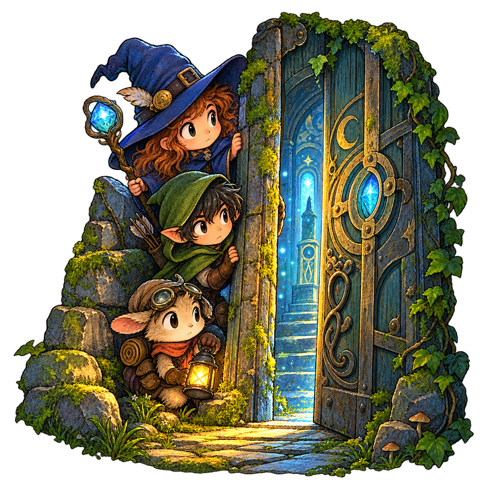
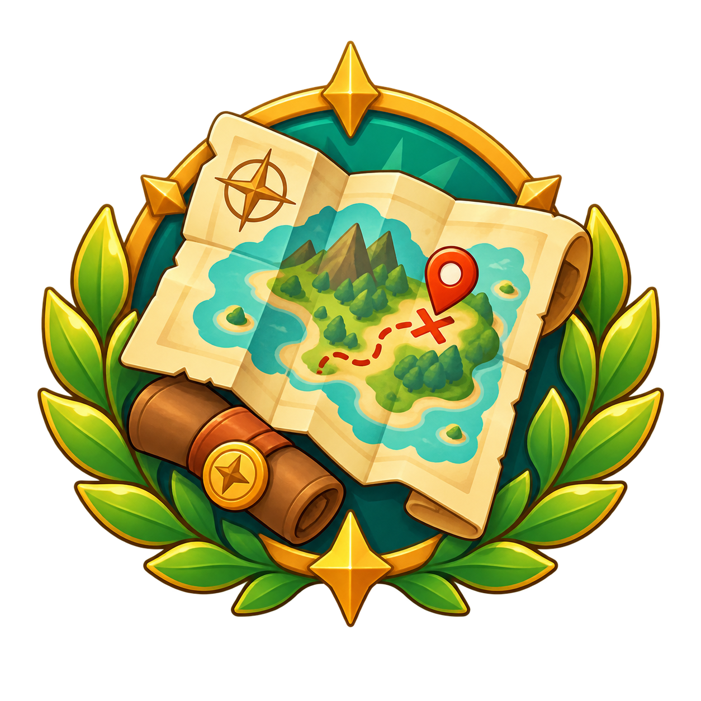
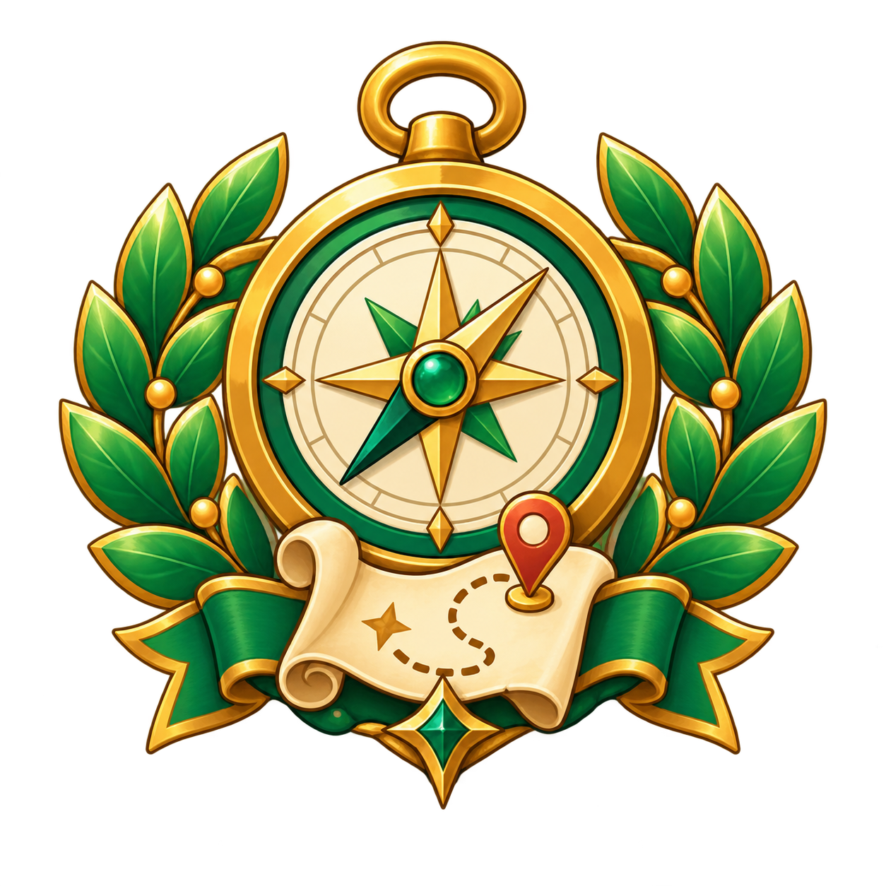

Выбери маршрут
Открой раздел квестов, выбери город и подходящий маршрут. В карточке видны описание, расстояние, оценка и количество прохождений.
Для игроков
КвестЭра помогает смотреть на знакомые улицы по-новому. Выбирай маршрут, следуй этапам, решай загадки и открывай места, мимо которых раньше проходил.
Найти квестОткрой раздел квестов, выбери город и подходящий маршрут. В карточке видны описание, расстояние, оценка и количество прохождений.
Нажми «Начать квест» и двигайся по маршруту. Если этап связан с геолокацией, подойди к точке и подтверди своё местоположение.
Изучи текст, изображение или видео этапа и отправь ответ. Ошибочный ответ не завершает этап — можно попробовать снова.
Всё важное — в одном месте
Если автор добавил подсказку, появится кнопка «💡 Получить подсказку — 10 очков». Перед покупкой приложение покажет подтверждение.
Игровые очки можно тратить на подсказки. Опыт профиля — отдельный показатель: он начисляется за выполненные этапы и уникальное первое прохождение квеста.
После завершения поставь оценку от одной до пяти звёзд и при желании напиши отзыв. Текст проверяется на ненормативную лексику, ссылки и телефоны, а затем проходит модерацию.
Добавляй интересные маршруты в избранное. Квест можно пройти повторно, но опыт за первое прохождение повторно не начисляется.
Достижения выдаются один раз после выполнения условия и отображаются в профиле игрока. Авторские достижения хранятся отдельно.

Первый шагПройди первый квест
Город исследованОткрой 5 новых мест
Мастер загадокРеши 10 заданийМануал игрока
Вся информация о поиске, прохождении и оценке городских квестов собрана прямо на этой странице.
Квест состоит из этапов, которые проходят по порядку.
Геолокация: разреши доступ к местоположению, дойди до точки на карте и нажми «Проверить моё местоположение». Проверка учитывает радиус, заданный автором.
Вопрос: изучи задание и материалы, введи ответ. Система проверяет смысл ответа, поэтому полный ответ с правильным значением засчитывается. Неверный ответ не завершает этап — можно попробовать снова.
Изображения, видео и текст нужно изучить до отправки ответа.
Подсказка появляется по кнопке «💡 Получить подсказку — 10 очков». После подтверждения очки списываются, а подсказка открывается для текущего задания.
Игровые очки и опыт профиля — разные показатели. Опыт начисляется за выполненные точки, завершённые квесты и предусмотренные награды. Он не начисляется за просмотр карточки, карту, избранное, лайк, покупку подсказки или повторное начисление одного события.
Достижения выдаются автоматически один раз за заметные результаты: первое прохождение, геолокацию, несколько маршрутов или новый уровень. Достижения игрока хранятся отдельно от авторских.
Закладка добавляет квест в Избранное, а значок «Нравится» оставляет отдельную отметку интереса.
После завершения выбери оценку от одной до пяти звёзд. Отзыв необязателен: текст проверяется на ненормативную лексику, ссылки и номера телефонов, затем проходит модерацию. Оценку можно изменить через экран обратной связи.
После последнего этапа квест считается завершённым и появляется в разделе Завершённые. Разрешённый квест можно пройти снова, но награда за первое прохождение повторно не начисляется.
На карте отображаются доступные точки. Если прохождение прервано, используй блок Продолжить прохождение.